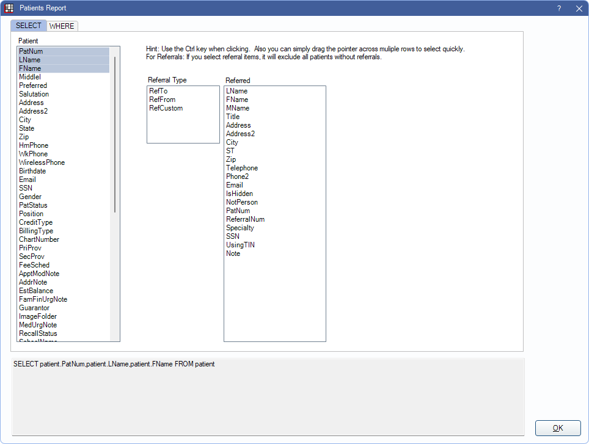
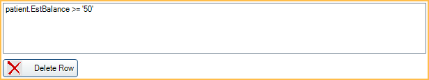

Patients Report
The Patients Report is used to create simple queries using fields in the Patient table.
In Standard Reports, in the Lists section, click Patients - Raw.
Options are hard coded and may not reflect all database fields. For more query options, see Query Examples or submit a Query Request.
Select Tab

In the Select tab, choose which columns of data to include in the report (e.g., PatNum, Email, etc). This information is pulled directly from the Patient Table in Open Dental and most can be edited or added from Edit Patient Information. Most fields are self-explanatory. Below are fields that may need additional explanation.
Patient: Select fields to include columns on patient information.
- PatNum: Patient Number. Unique number assigned to a patient when they are created. Cannot be changed. Change the Query Format to Raw to see the PatNum rather than the Patient Name when running the report.
- PatStatus: Patient status set in Edit Patient Information (i.e., Patient, NonPatient, Inactive, Archived, Deceased, Prospective, or Deleted).
- Position: Position set in Edit Patient Information (i.e.,Single, Married, Child, Widowed, or Divorced).
- FeeSched: Fee schedule assigned to a patient in Edit Patient Information Fee Schedule (rarely used) dropdown.
- ApptModNote: Appointment Module Note for individual patient. Edited in Patient Appointments.
- Est Balance: Current patient balance. This number never subtracts insurance estimates.
- ImageFolder: Name of folder where patient images are stored. This is not set in Edit Patient Information and cannot be edited.
- MedUrgNote: Med Urgent Note entered in Medical.
- EmployerNum: Unique number assigned to an Employer when it is created. This number is system-generated and cannot be edited.
- Urgency: Treatment Urgency set in Edit Patient Information: Public Health Tab.
- DateFirstVisit: The date that the patient first visited the office. This is automated. Can be changed in the Edit Patient Information: Other Tab.
- ClinNum: Unique number of the patient's assigned clinic. This number is system-generated and cannot be edited.
- HasIns: "I" flag indicates patient has insurance.
- TrophyFolder: For offices using the Trophy Bridge.
- Ward: Used by hospitals. Displays ward entered in Edit Patient Information: Hospitals Tab.
- AdmitDate: Used by hospitals. Usually set automatically. Can be changed from the Edit Patient Information: Hospitals Tab.
- SiteNum: Unique number assigned to the patient's site. This number is system-generated and cannot be edited.
- DateTStamp: Date/Time stamp of the last time a row was added or changed in the Patient table (e.g., the last time information was updated or added for this patient).
- First Complete Proc: Date of the most first completed procedure. This is not stored in the Patient table.
- Last Complete Proc: Date of the most recent completed procedure. This is not stored in the Patient table.
Referral Type: Select a referral type and at least one Referred field to filter patients with Referrals. Patients with no referrals (or only referrals of a different type) are excluded from the report. Only one referral type can be selected at a time. To include patients without referrals, leave this section deselected.
- RefTo: Referred To. Select to see outbound patient referrals (e.g., patient referred out to a specialist).
- RefFrom: Referred From. Select to see inbound patient referrals (e.g., patient referred to your practice).
- RefCustom: Custom Referral. Select to see custom referrals.
Referred: Select fields to include information on referral. For referrals that are not patients (e.g., providers), this information is entered in the Edit Referral window. See Referral List. Most fields are self-explanatory. Below are fields that may need additional explanation.
- IsHidden: "1" indicates referral has been marked Hidden.
- UsingTIN: Indicate if referral is using TIN instead of SSN. "0" indicates SSN column (if shown) is SSN. 1 indicates SSN column (if shown) is TIN.
- NotPerson: "1" indicates referral is marked as Not Person.
- ReferralNum: Unique number assigned to a referral when it is created. This number is system-generated and cannot be edited.
- Phone2: Other Phone in the Edit Referral window.
Where Tab

In the Where tab, users can select additional patient fields to limit report results. Most fields are self-explanatory. Below are fields that need additional explanation. Most fields are added or edited from Edit Patient Information.
- Age: Age is not stored in the database. Age is always calculated as needed from birthdate.
- Birthdate: Date of birth, including year (e.g., 12/09/1992).
- Birthday: Day and month of birth, excludes year (e.g., 12/09).
- CreditType: Single character. Suggested use is A, B, or C to designate creditworthiness.
- FamFinUrgNote: Family Urgent Fin Note entered in account Account Module.
- Last Complete Proc: Date of the most recent completed procedure. This is not stored in the Patient table.
- Last Visit Date: Date of the patient's most recent procedure. This may be a future date if the patient has future scheduled appointments. This is not stored in the Patient table.

When including a Where statement to the Patients Report, it is necessary to choose how the data is being limited. A phrase can be entered or options selected from a list, depending on the selected field, to limit the results. Below are the options. For the examples noted, assume that PatNum and 14 are being used to filter.
LIKE: Include results from similar to the filter entered (e.g., results include PatNum: 14, 140, 7142, and any other results that include the combination of characters entered).
=: Only includes results matching the statement exactly (e.g., results only include PatNum: 14).
> : Include all results greater than the statement entered (e.g., PatNums 15 and above are included in results).
<: Include all results less than the statement entered (e.g., PatNums 13 and lower are included in results).
>=: Include all results greater than or equal to the statement entered (e.g., PatNum 14 and above are included in results).
<=: Include all results less than or equal to the statement entered (e.g., PatNum 14 and lower are included in results).
<>: Include only results less than or greater than the statement entered (e.g., PatNum 14 is excluded from the results, but 15 and above are included and 13 and lower are included).
This section displays the limitations that have already been added to the report. Click Delete Row to delete a limitation from the report.
Query
At the bottom of the window, regardless of the selected tab, is a preview of the query being written. Any time new criteria is selected or added, the raw query information is shown here. This section is read-only.

Click OK to run the query after all desired criteria has been added.
Running the Patients Report
- In the SELECT tab, select the Patient information the display on the report. Ctrl + Click to select multiple rows.
- Select information to include from Referral Type/Referred lists.
- Click the WHERE tab.
- Choose field(s) to limit query results.
- Enter necessary details and choose how to limit results.
- Click Add.
- Repeat steps 4-6 to add any additional limitations as needed.
- Select a row and click Delete Row to remove a row that was added by mistake.
- Click OK to run the report. The results are displayed in the User Query window.